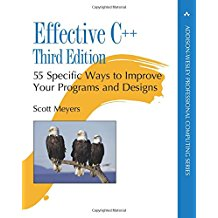
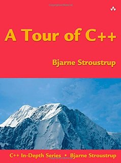
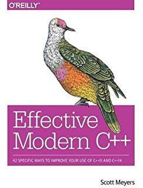
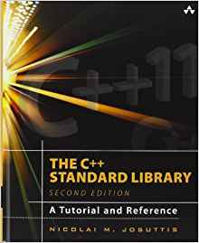
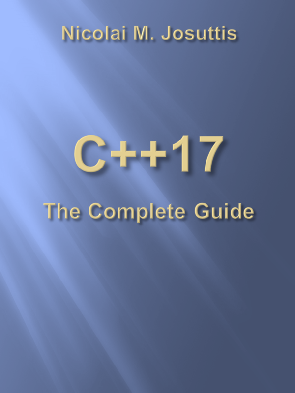
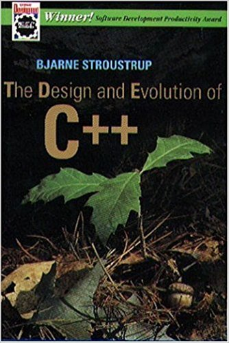
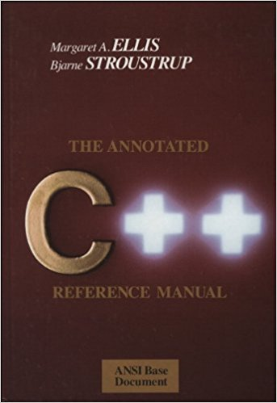

|

Effective C++: 55 Specific Ways to Improve Your Programs and Designs (3rd Edition) (Scott Meyers):
The first two editions of Effective C++ were embraced by hundreds of thousands
of programmers worldwide. The reason is clear: Scott Meyers' practical approach to C++
describes the rules of thumb used by the experts &emdash; the things they almost always
do or almost always avoid doing &emdash; to produce clear, correct, efficient code.
Mead's Take: This is a good place to start. You don't need to be an expert to be able to understand a lot of the advice. Since it was written in 2005, it doesn't cover any modern C++ features, but there is a newer book that focuses on those topics. This book focuses on the core of the C++ language. A few of the topics are outdated due to improvements in the C++ language (C++11), but the bulk of the book is still relevant today. Scott also wrote a book called More Effective C++: 35 New Ways to Improve Your Programs and Designs which is older yet. It may have some information that this book doesn't. |
|
Effective STL: 50 Specific Ways to Improve Your Use of the Standard Template Library (Scott Meyers):
Written for the intermediate or advanced C++ programmer, renowned C++ expert Scott Meyers
provides essential techniques for getting more out of the Standard Template Library in
Effective STL, a tutorial for doing more with this powerful library.
STL is a hugely powerful feature of today's C++, but one with a well-earned reputation
for complexity. The book is organized into 50 tips that explore different areas of
the STL. Besides providing a list of dos and don'ts, Meyers presents a lot of
background on what works and what doesn't with STL. Each tip is demonstrated with
in-depth coding samples, many of which make use of two-color printing to highlight
the most important lines of code. (Advanced developers will enjoy Meyers's in-depth
explanations, while those who are in a hurry can skip ahead to the recommended tip itself.)
Mead's Take: This is another gem from Scott Meyers. He does to the STL what his other books do to the C++ language itself. This book was written in 1996, which seems like an eternity in software development, but a lot of the advice is still relevant. Obviously, it doesn't cover any of the newer features of the STL, but it is still worth the read. Even though it's pretty old, used copies are still selling for about the same as new copies. That's how good it is. If Scott ever updates this book to include the new features, I would buy it in a heartbeat! |
|

A Tour of C++ (Bjarne Stroustrup):
The C++11 standard allows programmers to express ideas more clearly, simply, and directly, and
to write faster, more efficient code. Bjarne Stroustrup, the designer and original implementer
of C++, thoroughly covers the details of this language and its use in his definitive reference,
The C++ Programming Language, Fourth Edition.
Mead's Take: This is a quick-start book for experienced C++ programmers. It's only about 180 pages, so it really is just a brief overview. If you already know C++ pretty well, it's a good place to start. However, when I got this book a couple of years ago, there were a lot of typos in it, which could confuse new programmers. They may have been fixed now. |
|

Effective Modern C++ (Scott Meyers):
Coming to grips with C++11 and C++14 is more than a matter of familiarizing yourself with
the features they introduce (e.g., auto type declarations, move semantics, lambda expressions,
and concurrency support). The challenge is learning to use those features effectively—so
that your software is correct, efficient, maintainable, and portable. That's where this
practical book comes in. It describes how to write truly great software using C++11
and C++14, i.e. using modern C++.
Mead's Take: Written by Scott Meyers, this is a detailed-oriented book on some of the new (and difficult to understand) features in C++. Scott is very likely one of the most knowlegable C++ developers around and his books are always highly-rated. A must read for anyone that really wants all of the gory details. Be warned, though, that this book is meant for C++ programmers that are very familiar with the core of C++. |
 Overview of the New C++ (C++11/14) (Scott Meyers):
This PDF document consists of Scott Meyers' extensively annotated presentation materials for
his training course on C++11 and C++14. This intensively technical seminar introduces the most
important new features in C++11 and C++14 and explains how to get the most out of them.
Overview of the New C++ (C++11/14) (Scott Meyers):
This PDF document consists of Scott Meyers' extensively annotated presentation materials for
his training course on C++11 and C++14. This intensively technical seminar introduces the most
important new features in C++11 and C++14 and explains how to get the most out of them.
Mead's Take: Also written by Scott Meyers, this is a PDF of the new features of C++. They are probably best when you are reading them while Scott is speaking. But, they are very well written, and you can easily follow the examples without Scott being there. Because it's a PDF only (electronic), it is still being updated.
|
|

The C++ Standard Library: A Tutorial and Reference (2nd Edition) (Nicolai Josuttis):
The C++ standard library provides a set of common classes and interfaces that greatly
extend the core C++ language. The library, however, is not self-explanatory. To make
full use of its components–and to benefit from their power–you need a resource that
does far more than list the classes and their functions.
The C++ Standard Library: A Tutorial and Reference, Second Edition, describes this library as now incorporated into the new ANSI/ISO C++ language standard (C++11). The book provides comprehensive documentation of each library component, including an introduction to its purpose and design; clearly written explanations of complex concepts; the practical programming details needed for effective use; traps and pitfalls; the exact signature and definition of the most important classes and functions; and numerous examples of working code. The book focuses in particular on the Standard Template Library (STL), examining containers, iterators, function objects, and STL algorithms.
Mead's Take: This is the second edition of Nicolai Josuttis' best selling book. If you are going to have only one reference for the STL, this is it. It was updated to include the changes to the library when C++11 was released. As the title indicates, this is both a tutorial and reference that you will refer to often. This makes it valuable to both beginners and experienced C++ programmers alike.
|
|

C++17 - The Complete Guide (Nicolai Josuttis):
C++17 is the next evolution in modern C++ programming, which is already at least partially
supported by the latest version of gcc, clang, and Visual C++. Although it is not as
big a step as C++11, it contains a large number of small and valuable language and library
features, which will change the way we program in C++. As usual, not everything is
self-explanatory, combining new features gives even more power, and there are hidden traps.
This book presents all the new language and library features in C++17. It covers the motivation and context of each new feature with examples and background information. The focus is on how these features impact day-to-day programming, what it means to combine them, and how to benefit from this in practice.
Mead's Take: I have only just started to read this because it isn't actually finished yet! The author, Nicolai Josuttis, is a superstar in the C++ world. I went to his talk on C++17 at CppCon 2017 and got a free copy of this eBook. He's actually publishing it as a PDF (and other eBook formats) so that if you buy it now, you will get free updates/fixes while he works on it. It's a new and refreshing way to publish books, which also makes the book significantly cheaper than the usual hard copy books. Check it out at the link above. I'll update this once I've had a chance to go through it more.
|
|

The Design and Evolution of C++ (Bjarne Stroustrup):
This book focuses on the principles, processes and decisions made during the development
of the C++ programming language. As the inventor of the language, Stroustrup presents his
insight into the decisions which resulted in the features of C++ - the praised, the
controversial and even some of the rejected ones. By writing this book the author presents
his object-oriented programming philosophy to the interested programming community.
His vehicle is the C++ language but his focus is on real object-oriented programming
language development for the working programmer rather than as a abstract approach
to the OOP paradigm.
Mead's Take: This book was written in 1994 by the man himself, Bjarne Stroustrup. It's not a book on how to program in C++, but, rather it's a history of how the language and its features came about. Want to know why the keyword is this or why the insertion (output) operator is <<, or why there is no power operator (e.g. as in N3)? Then this book is for you. No decisions were arbitrary. There were solid reasons and long, though-out discussions about every facet of the language. This book is for those that really want to know all of the nitty gritty details about how C++ came to be. If you ever want to design your own programming language, you first need to understand what others have done so you don't make the same mistakes or go down the same dead-ends. As of today (April 2018), it sells for $57 on Amazon. Even used copies are $20 for a relatively small paperback. That's how good it is. I'm glad I bought mine years ago! It would be nice to have an updated version for all of the new features added in C++11, C++14, and C++17, but I suspect with the internet, a lot of those discussions are already available. Still, I'd like to have it all in one place and written by Stroustrup. That would be pure gold! |
|

The Annotated C++ Reference Manual (Bjarne Stroustrup):
This book provides a complete reference for the C++ programming language. It consists
of the C++ reference manual, approved as the base document for ANSI standardization of
the language, plus annotations and commentary. The annotations and commentary
discuss what is not included in the language, why certain features are defined as
they are, and how one might implement particular features. The commentaries also help
the reader to understand the relationships between parts of the language.
Comparisons with C and examples explain the more subtle points of the language.
Sixteen chapters cover the latest version of C++ including multiple inheritance,
abstract classes, templates, exception handling, and more. A final chapter describes
resolutions by the ANSI/ISO committee including new features such as run-time type
information and namespaces. Appendices summarize the grammar and evolution of the language,
and explain in detail the differences between C and C++. The Annotated C++ Reference Manual
will appeal to language implementors and expert C++ programmers.
Mead's Take: This book also gives a lot of history of C++. It's not as dry as reading the formal standards document as it's written more informally. You'll get a lot of gory details here that you won't find anywhere else, with the exception of the C++ ISO Standard Document. This book answers more of the how or why questions instead of just the what questions. Want to know how to implement multiple inheritance using virtual base classes (you already know what that is) or why the assignment operator must be a member function? This book is for you.
Other resources
Compiler support for C++:
|